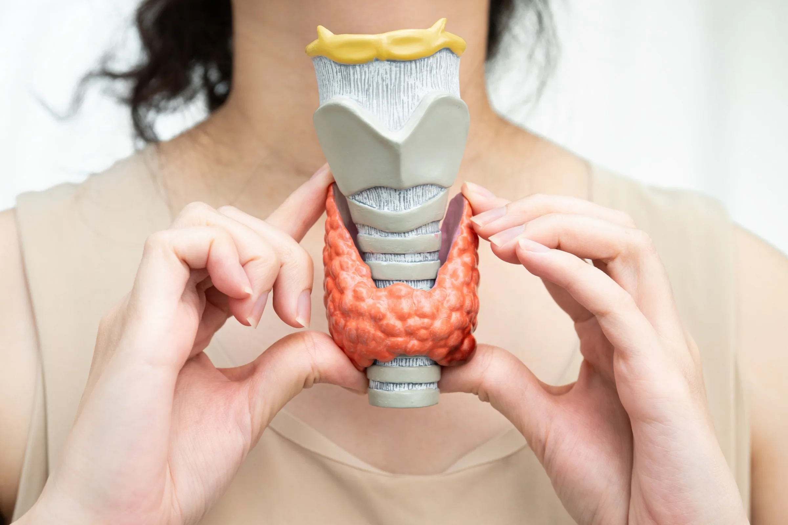

Conditions we help with in Green Bay
Whatever brought you in, care starts the same way: find why it hurts, then build a simple plan around how you move. Explore the conditions we see most.

Arm & leg pain
Pain, tingling, or numbness that travels down a limb usually starts at the spine rather than where you feel it.


Auto injury
Careful assessment and hands-on care after a collision, documented from the first visit.


Carpal tunnel syndrome
The nerve runs from your neck to your wrist, and the trouble is not always at the wrist.


Irritable Bowel Syndrome (IBS)
An IBS diagnosis usually means the standard tests came back clear and nobody could tell you why.


Neck pain
The desk, the phone, and the pillow you actually use matter more than most advice admits.

Plantar fasciitis
Heel pain that will not settle is often about how the whole leg loads, not just the sore spot.

Pregnancy-related spinal stress
Comfortable to lie down for, and adapted as your body changes.

Sciatica
Sciatica is a symptom, and the useful question is where the nerve is being irritated.



Thyroid Problems
If your thyroid numbers came back acceptable and your symptoms did not go anywhere, that gap is worth looking into properly.


Not sure where you fit?
Or call us directly: (920) 347-4884